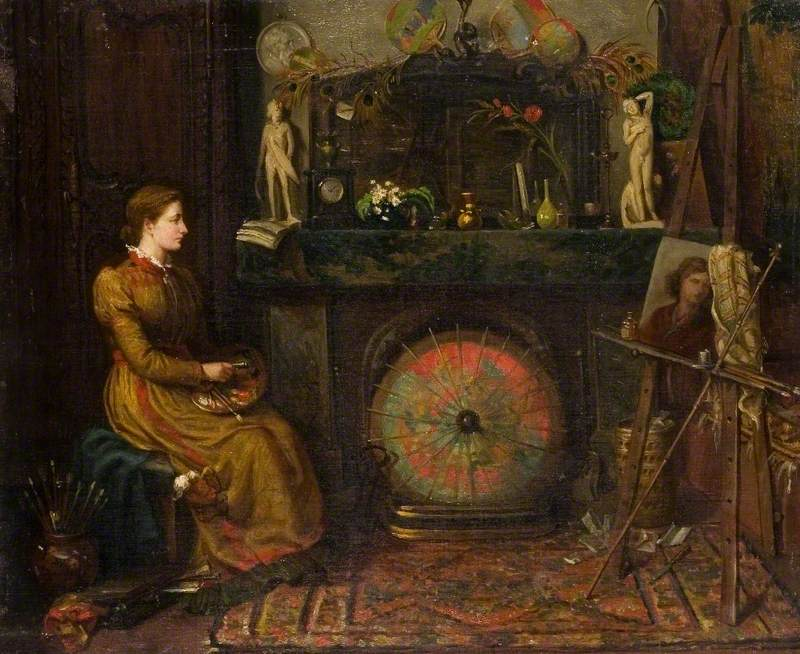
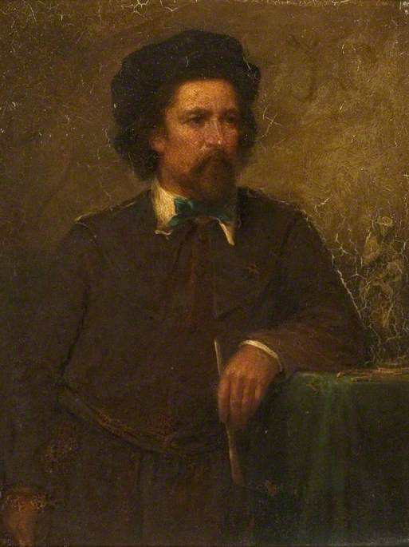
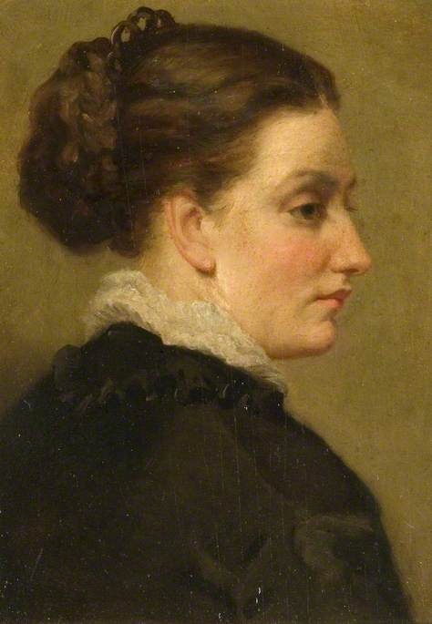

The Artists
Two lives, told and untold
Margaret Thomas left books, poems and paintings; Henrietta Pilkington left only her watercolours. For some sixty years they lived, worked and travelled together.
Margaret Thomas
1842–1929 · painter, sculptor, poet, travel writer
Margaret Thomas was born Margaret Sarah Cook in Croydon on 23 December 1842. When she was nine the family emigrated to Melbourne, drawn – it seems – like so many others by the Victorian gold rushes. It was there, still a child, that she began to study with the sculptor Charles Summers, and there that she made her debut: a portrait medallion shown at the first exhibition of the Victorian Society of Fine Arts in 1857. She was among the very first women to study sculpture in the colony of Victoria – by some accounts the first – and she took, for professional purposes, a new name assembled from her parents’ own: Margaret Thomas.
“‘Physical Geography’ by Mme Somerville … I recommend ‘Physical Geography’, it’s a magnificent work.”
Margaret Thomas to her friend ‘Rebie’, Melbourne, 13 May 1866
Translated from the French
Australia trained her; London tested her. Returning to England around 1867, she studied at the South Kensington Schools, spent two and a half years in Rome, and in 1871 entered the Royal Academy Schools, sponsored by Summers. In 1872 she became the first woman to win the Academy’s silver medal for modelling. Two years later six of her portraits were hung ‘on the line’ at the Royal Academy exhibition – at eye level, the hang every artist wanted. From a studio in Pimlico she built a career as a portraitist and sculptor: her marble bust of the nature writer Richard Jefferies, unveiled in Salisbury Cathedral in 1892, was her last work of sculpture and can still be seen there today. The Australian curator Elena Taylor has called her ‘one of the most interesting Australian artists of the second half of the nineteenth century’. In her lifetime she was known in two hemispheres; today she is scarcely known at all.
From the late 1880s – the two women gave up their London life in the winter of 1888 – she reinvented herself as a travel writer, producing practical, curious, unheroic books, illustrated by her own hand: A Scamper through Spain and Tangier (1892), then – after the great journey with Pilkington – Two Years in Palestine and Syria (1900).


Henrietta Pilkington
c. 1845–1927 · painter · the second pair of eyes
Henrietta Pilkington is harder to see – and it is worth being honest about why. She published nothing, and no letters or diaries in her own words have yet been found. Almost everything we know about her comes from the records of others: census returns, exhibition lists, Thomas’s dedications, and the museum’s own catalogue. She was Irish-born, and had exhibited paintings at the Ballarat Mechanics’ Institute in Australia in 1869; two of her landscapes are in the State Library of Victoria. She and Thomas met around the time Thomas left Australia, and from then on – as the historian Kedrun Laurie puts it – ‘with common purpose, the two lived, worked, and travelled everywhere together’.
Thomas painted her in 1874, the year six of her portraits hung at the Academy. Charles Summers modelled a bust of her in 1875. Thomas dedicated her first volume of poems, Friendship (1873), to her, and nearly twenty years later dedicated her Spanish travel book to ‘my dear friend, the companion of these wanderings’.
But the best evidence for Pilkington is her own work. The museum holds more than eighty of her watercolours: Venice and Chioggia, Siena and San Gimignano, Pompeii and Capri, Taormina, Athens, Cairo and Karnak, Jerusalem, Tiberias, Hebron and Baalbek. They are small, quick and unshowy – painted rapidly and on the spot. Set side by side the portfolio amounts to something remarkable: an independent visual diary of some twenty-five years of travel, made by a woman who never sought an audience for it.
